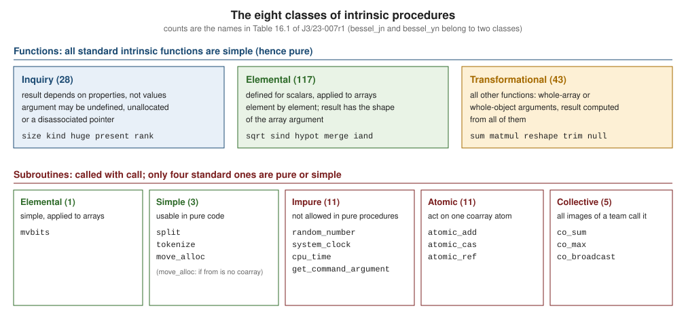

Intrinsic Procedures Overview
|
This content was generated with the assistance of AI and should be verified against the official documentation before being relied on in production. |
This page is written against Fortran 2023 (ISO/IEC 1539-1:2023, J3 final draft J3/23-007r1) and was checked on 2026-10-18
with GNU Fortran 16.2 and LLVM Flang 23. An intrinsic procedure is one the language itself provides: there is nothing to
declare, link or install, and every conforming compiler has the same names, the same argument keywords and the same results
(to within the accuracy the standard leaves to the processor). Clause 16 of the standard defines 217 of them, from abs
to verify, and a Fortran program is mostly built from them; the loops other languages need for "the sum of the
temperatures" or "the distance between two points" are single calls here. This page is the map of that clause. It
explains the classes an intrinsic can belong to and what the class lets you do with it, the rules for calling one
(keywords, optional arguments, specific names, the intrinsic statement), and lists every standard intrinsic procedure by
category with its class, its origin and the clause that specifies it. The second half works through the groups that
no other page covers: the mathematical functions, the command-line, environment, clock and operating-system
procedures, and the pseudorandom number generator.
The groups with their own pages are cross-referenced from the index: the array functions are on
Array Intrinsics and Reductions, the numeric model,
conversions and bit procedures on
Numeric Model, Bit Manipulation and Conversion,
the character functions on Characters and Strings, the procedures
of iso_fortran_env, iso_c_binding and the IEEE modules on
Intrinsic Modules and iso_fortran_env and
Floating-Point and IEEE Arithmetic, and the coarray,
atomic and collective procedures on
Coarrays, Images and Synchronization and
Coarray Teams, Events, Collectives and Atomics.
Every example is a complete file in the heatflow scenario (a two-dimensional heat-diffusion solver with dp for
real64) that can be extracted and run on its own. Unless a paragraph says otherwise, it compiles without warnings under
gfortran -std=f2023 -Wall -Wextra -pedantic -fimplicit-none -fcheck=all, was also built and run with LLVM Flang 23, and the
output shown is what it printed. Examples that are deliberately wrong are labelled as non-conforming and show the real
diagnostics, naming the compiler that produced them.
The classes of intrinsic procedures
The standard divides intrinsic procedures into eight classes (16.1): inquiry functions, elemental functions, transformational functions, elemental subroutines, simple subroutines, atomic subroutines, collective subroutines and (impure) subroutines. The class decides where a procedure may be called, how it treats array arguments, and whether it may appear in a constant or specification expression.

The counts in the figure are the number of names in Table 16.1 of J3/23-007r1 (16.7) that belong to each class; bessel_jn and
bessel_yn appear twice because their two-argument form is elemental and their three-argument form transformational.
-
Inquiry functions return a property of the argument, not its value, so the argument may even be undefined. Unless a description says otherwise, an inquiry argument may be an unallocated allocatable variable or a disassociated pointer.
size,lbound,uboundandshapedo say otherwise (the array must be allocated or associated), andlendoes for a deferred-length character variable;kind,rank,allocated,hugeanddigitsdo not. An inquiry function also accepts arrays of undefined shape (16.2.2). -
Elemental functions are written for scalars and applied to arrays. When any argument is an array, the result has the shape of that array, all array arguments must be conformable, and the value of each element is what the scalar function would give for the corresponding elements (15.9.2). Scalar arguments are broadcast, so
max(u, 10.0_dp, 2.0_dp * v)is legal for arraysuandvof one shape. User-writtenelementalprocedures follow the same rule, which is why they are the idiomatic way to extend the intrinsic set. -
Transformational functions are all the other functions. Almost all take array arguments or return an array, and the result is computed from the whole of them:
sum,matmul,reshape, but alsotrim,selected_real_kindandnull. Their array arguments must have a defined shape. -
Elemental subroutines (
mvbits), simple subroutines (move_alloc,split,tokenize), atomic subroutines (atomic_addand ten more), collective subroutines (co_sumand four more) and the remaining impure subroutines (random_number,system_clock,get_command_argumentand others) are called withcall.
The first example shows the classes side by side. It also shows that the argument of an inquiry function is not evaluated for its
value: rank and allocated work on an array that has never been allocated.
! Intrinsic procedure classes: elemental, inquiry, transformational, subroutine
program classes
use, intrinsic :: iso_fortran_env, only: real64, int64
implicit none
integer, parameter :: dp = real64
real(dp) :: u(2, 3), v(2, 3)
real(dp), allocatable :: unset(:)
integer :: n
u = reshape([1.0_dp, 4.0_dp, 9.0_dp, 16.0_dp, 25.0_dp, 36.0_dp], [2, 3])
! elemental: scalar rule, array argument, array result of the same shape
v = sqrt(u)
print '(a, 3f6.1)', 'sqrt(u) row 1: ', v(1, :)
print '(a, 3f6.1)', 'max(u, 10, 2*v) r2: ', max(u(2, :), 10.0_dp, 2.0_dp * v(2, :))
! inquiry: the value of the argument is irrelevant, so an unallocated array is fine
print '(a, i0, a, l1)', 'rank(unset) = ', rank(unset), &
' allocated(unset) = ', allocated(unset)
print '(a, i0)', 'kind(unset) = ', kind(unset)
print '(a, i0, a, i0)', 'huge(1) = ', huge(1), ' bit_size(1_int64) = ', bit_size(1_int64)
! transformational: whole-array arguments, result built from all of them
print '(a, f6.1)', 'sum(u) = ', sum(u)
print '(a, 3f6.1)', 'maxval(u, dim=1) = ', maxval(u, dim=1)
print '(a, 2i3)', 'shape(transpose(u)) = ', shape(transpose(u))
! subroutine: impure, called with call
call random_number(v)
n = count(v >= 0.0_dp .and. v < 1.0_dp)
print '(a, i0, a)', 'random_number gave ', n, ' of 6 values inside [0, 1)'
! keyword and optional arguments
print '(a, i0)', 'nint(2.5_dp) = ', nint(2.5_dp)
print '(a, i0)', 'nint(a=2.5_dp, kind=int64) = ', nint(a=2.5_dp, kind=int64)
print '(a, f4.1)', 'sign(b=-1.0_dp, a=3.0_dp) = ', sign(b=-1.0_dp, a=3.0_dp)
print '(a, 2f5.1)', 'cmplx(kind=dp, y=2.0_dp, x=1.0_dp) = ', cmplx(kind=dp, y=2.0_dp, x=1.0_dp)
end program classessqrt(u) row 1: 1.0 3.0 5.0
max(u, 10, 2*v) r2: 10.0 16.0 36.0
rank(unset) = 1 allocated(unset) = F
kind(unset) = 8
huge(1) = 2147483647 bit_size(1_int64) = 64
sum(u) = 91.0
maxval(u, dim=1) = 4.0 16.0 36.0
shape(transpose(u)) = 3 2
random_number gave 6 of 6 values inside [0, 1)
nint(2.5_dp) = 3
nint(a=2.5_dp, kind=int64) = 3
sign(b=-1.0_dp, a=3.0_dp) = -3.0
cmplx(kind=dp, y=2.0_dp, x=1.0_dp) = 1.0 2.0GNU Fortran and Flang printed identical output. Two further points in the example are explained in the next section: nint was
called with the kind= keyword, and sign with its arguments in reverse order.
Pure and simple status
All standard intrinsic functions are simple, and a simple procedure is pure (16.1, 15.8). They can therefore be called from
pure and elemental procedures, from the body of a do concurrent construct, and inside the specification part of a
procedure, where an array bound may call any standard intrinsic function whose arguments are themselves restricted expressions
(10.1.11). Intrinsic functions of constant arguments can also appear in constant expressions: the elemental ones, and the
transformational ones except command_argument_count, get_team, num_images, team_number and this_image, with null and
transfer governed by rules of their own (10.1.12). That is what makes
real(dp), parameter :: pi = 4.0_dp * atan(1.0_dp) a named constant and integer, parameter :: ip = selected_int_kind(9)
a kind.
The intrinsic subroutines are different. Only four standard ones are pure or simple: move_alloc (when from is not a
coarray), split, tokenize and the elemental mvbits. The statement in 16.1 is explicit: no other standard intrinsic
subroutine is pure or simple. A pure procedure cannot call random_number, cpu_time, system_clock, date_and_time or
execute_command_line, because their results depend on or change state outside the program’s variables.
! Intrinsic functions are pure: usable in pure procedures, do concurrent and specification expressions
module heatflow_decay
use, intrinsic :: iso_fortran_env, only: real64
implicit none
private
public :: dp, decay, relax
integer, parameter :: dp = real64
contains
elemental function decay(t, k) result(r)
real(dp), intent(in) :: t, k
real(dp) :: r
r = exp(-k * t) * cos(k * t) ! intrinsic functions only: fine
end function decay
pure subroutine relax(u, factor)
real(dp), intent(inout) :: u(:, :)
real(dp), intent(in) :: factor
integer :: i, j
do concurrent (j = 1:size(u, 2), i = 1:size(u, 1))
u(i, j) = u(i, j) * factor + (1.0_dp - factor) * sqrt(abs(u(i, j)))
end do
end subroutine relax
end module heatflow_decay
program pure_use
use heatflow_decay
implicit none
real(dp) :: u(2, 2)
real(dp) :: table(0:3)
! the extent of a local array is a specification expression built from intrinsics
call show(5)
u = reshape([4.0_dp, 9.0_dp, 16.0_dp, 25.0_dp], [2, 2])
call relax(u, 0.5_dp)
print '(a, 4f8.4)', 'relax: ', u
table = decay([0.0_dp, 1.0_dp, 2.0_dp, 3.0_dp], 0.5_dp) ! elemental, like an intrinsic
print '(a, 4f8.4)', 'decay: ', table
contains
subroutine show(n)
integer, intent(in) :: n
real(dp) :: work(max(n, 3), merge(2, 4, n > 4))
print '(a, 2i3)', 'shape of work = ', shape(work)
end subroutine show
end program pure_useshape of work = 5 2
relax: 3.0000 6.0000 10.0000 15.0000
decay: 1.0000 0.5323 0.1988 0.0158Calling an impure intrinsic from a pure procedure is rejected at compile time.
! Non-conforming: subroutine intrinsics are not pure
module bad_pure_mod
implicit none
contains
pure function noisy(x) result(r)
real, intent(in) :: x
real :: r, e
call random_number(e)
r = x + e
end function noisy
pure subroutine stamp(t)
real, intent(out) :: t
call cpu_time(t)
end subroutine stamp
end module bad_pure_modGNU Fortran 16.2 reports:
12_bad_pure.f90:14:20:
14 | call cpu_time(t)
| 1
Error: Subroutine call to intrinsic 'cpu_time' at (1) is not PURE
12_bad_pure.f90:8:25:
8 | call random_number(e)
| 1
Error: Subroutine call to intrinsic 'random_number' at (1) is not PURELLVM Flang 23 reports:
error: Semantic errors in 12_bad_pure.f90
12_bad_pure.f90:8:5: error: Procedure 'random_number' referenced in pure subprogram 'noisy' must be pure too
call random_number(e)
^^^^^^^^^^^^^^^^^^^^^
12_bad_pure.f90:14:5: error: Procedure 'cpu_time' referenced in pure subprogram 'stamp' must be pure too
call cpu_time(t)
^^^^^^^^^^^^^^^^A parallel-friendly program therefore generates its random numbers (or reads its clock) outside the do concurrent body and
passes the values in. The OpenMP and coarray forms of random_number are discussed in the random-number section below.
Calling an intrinsic procedure
Keyword and optional arguments
Every intrinsic can be called with positional arguments or with argument keywords, and the names are the ones in the
standard (16.2.1). Many have optional arguments, shown in brackets in the specification: cmplx(x [, y, kind])
accepts cmplx(x), cmplx(x, y), cmplx(x, kind=dp) and cmplx(kind=dp, y=2.0_dp, x=1.0_dp), the last in any order. The usual
rule for keyword arguments applies: once one is used, all the following ones must be keyword arguments as well. Keywords are what
keeps calls readable when several arguments are optional, and they let you skip an optional argument in the middle:
nint(a, kind=int64), maxloc(u, back=.true.), get_command_argument(i, length=n, status=s).
Some intrinsics impose conditions on their optional arguments that the bracket notation cannot express: selected_real_kind
needs at least one of p, r and radix, and random_seed needs at most one of size, put and get (16.2.1, note 2). The
dummy arguments of the specific intrinsic procedures have intent(in); so do those of the procedures in 16.9 unless the text says
otherwise. An argument named kind must be a scalar integer constant expression that names a kind the processor supports.
Misusing a keyword is a compile-time error. A misspelled or wrong keyword is reported:
! Non-conforming: wrong keyword name for an intrinsic
program bad_keyword
implicit none
print *, nint(x=2.5)
end program bad_keywordGNU Fortran 16.2:
03_bad_keyword.f90:4:10:
4 | print *, nint(x=2.5)
| 1
Error: Cannot find keyword named 'x' in call to 'nint' at (1)LLVM Flang 23:
error: Semantic errors in 03_bad_keyword.f90
03_bad_keyword.f90:4:17: error: unknown keyword argument to intrinsic 'nint'
print *, nint(x=2.5)
^A positional argument after a keyword argument is also rejected:
! Non-conforming: a positional argument after a keyword argument
program bad_order
implicit none
complex :: z
z = cmplx(x=1.0, 2.0)
print *, z
end program bad_orderGNU Fortran 16.2:
15_bad_order.f90:5:19:
5 | z = cmplx(x=1.0, 2.0)
| 1
Error: Missing keyword name in actual argument list at (1)LLVM Flang 23:
error: Semantic errors in 15_bad_order.f90
15_bad_order.f90:5:20: error: actual argument #2 without a keyword may not follow an actual argument with a keyword
z = cmplx(x=1.0, 2.0)
^^^The argument types are checked against the specification as well. In the next file every call is wrong: sqrt has no integer
form, atan2 needs both arguments of the same type and kind, and so does hypot.
! Non-conforming: wrong argument types
program bad_type
use, intrinsic :: iso_fortran_env, only: real32, real64
implicit none
integer :: n = 4
real(real32) :: a = 1.0
real(real64) :: b = 2.0d0
print *, sqrt(n)
print *, atan2(a, b)
print *, hypot(a, 3)
end program bad_typeGNU Fortran 16.2 reports all three:
05_bad_type.f90:8:16:
8 | print *, sqrt(n)
| 1
Error: 'x' argument of 'sqrt' intrinsic at (1) must be REAL or COMPLEX
05_bad_type.f90:9:20:
9 | print *, atan2(a, b)
| 1
Error: 'x' argument of 'atan2' intrinsic at (1) must be the same type and kind as 'y'
05_bad_type.f90:10:20:
10 | print *, hypot(a, 3)
| 1
Error: 'y' argument of 'hypot' intrinsic at (1) must be the same type and kind as 'x'LLVM Flang 23 reports sqrt and hypot, but accepts atan2(a, b) with a default real and a double precision argument without any
diagnostic, so the third call compiles there and prints a value. Code that relies on this runs on
one compiler and fails on the other:
error: Semantic errors in 05_bad_type.f90
05_bad_type.f90:8:17: error: Actual argument for 'x=' has bad type 'INTEGER(4)'
print *, sqrt(n)
^
05_bad_type.f90:10:21: error: Actual argument for 'y=' has bad type 'INTEGER(4)'
print *, hypot(a, 3)
^Generic names and specific names
Most intrinsics are generic: one name accepts several types and kinds, and the result has the type and kind of the argument.
sqrt(x) works for every real and complex kind, abs(i) for every integer kind. Fortran 77 had separate specific names for each
type, many of which are still in the standard: dsqrt for double precision, iabs for default integer, cabs for default
complex, amax1, float, idint. The standard lists them in Tables 16.2 and 16.3 (16.8) and has declared them obsolescent
since Fortran 2018 (Annex B.3.12: "The specific names of the intrinsic functions are often obscure and hinder portability. They
have been redundant since Fortran 90. Use generic names for references to intrinsic procedures.").
A specific name is useful in exactly one place: as an actual argument. An intrinsic function can only be passed to a procedure by
a name that denotes one function of one type, and a generic name denotes many. 16.1 requires that an intrinsic used as an actual
argument be referenced by its specific name and called in the called procedure with scalar arguments only; an intrinsic without a
specific name cannot be an actual argument at all. The intrinsic must also be declared with the intrinsic statement or attribute,
otherwise the compiler treats the name as an undeclared variable or function. The unrestricted names (Table 16.2) can be passed;
the restricted ones (Table 16.3) cannot.
| Generic name | Unrestricted specific names (Table 16.2) | Argument type |
|---|---|---|
|
|
default real, default integer, double precision, default complex |
|
the same names, plus |
default real, double precision |
|
|
default complex |
|
|
default real, double precision |
|
the same names, plus the |
default real, double precision, default complex |
|
|
default real, double precision, default complex |
|
|
default real, double precision, default integer |
|
|
default real, double precision |
|
|
default real, default character |
The restricted specific names of Table 16.3, which are not allowed as actual arguments (or as procedure pointer targets, or
to give an interface), are amax0, amax1, amin0, amin1, char, dmax1, dmin1, float, ichar, idint, ifix, int,
lge, lgt, lle, llt, max0, max1, min0, min1, real and sngl.
The intrinsic statement, or the intrinsic attribute in a declaration, tells the compiler that a name denotes the standard
procedure. This example passes the double precision specific names to a procedure that applies a function to a scalar:
! The intrinsic statement and intrinsic procedures as actual arguments
module apply_mod
use, intrinsic :: iso_fortran_env, only: real64
implicit none
private
public :: dp, apply
integer, parameter :: dp = real64
contains
subroutine apply(f, x, y)
interface
real(dp) function f(a)
import :: dp
real(dp), intent(in) :: a
end function f
end interface
real(dp), intent(in) :: x
real(dp), intent(out) :: y
y = f(x)
end subroutine apply
end module apply_mod
program intrinsic_statement
use apply_mod, only: dp, apply
implicit none
intrinsic :: dsqrt, dabs ! specific names: allowed as actual arguments
real(dp) :: y
call apply(dsqrt, 2.0_dp, y)
print '(a, f10.7)', 'apply(dsqrt, 2) = ', y
call apply(dabs, -3.5_dp, y)
print '(a, f10.7)', 'apply(dabs, -3.5) = ', y
end program intrinsic_statementapply(dsqrt, 2) = 1.4142136
apply(dabs, -3.5) = 3.5000000Both compilers printed the same output. The failures are easy to provoke. Without the intrinsic statement sin is an undeclared name:
! Non-conforming: sin passed as an actual argument without an intrinsic statement
program bad_actual
implicit none
real :: y
call apply(sin, 1.0, y) ! sin is not declared intrinsic here
print *, y
contains
subroutine apply(f, x, y)
interface
real function f(a)
real, intent(in) :: a
end function f
end interface
real, intent(in) :: x
real, intent(out) :: y
y = f(x)
end subroutine apply
end program bad_actualGNU Fortran 16.2:
04_bad_actual.f90:5:16:
5 | call apply(sin, 1.0, y)
| 1
Error: Symbol 'sin' at (1) has no IMPLICIT type
04_bad_actual.f90:5:16:
5 | call apply(sin, 1.0, y)
| 1
Error: Symbol 'sin' at (1) has no IMPLICIT typeLLVM Flang 23:
error: Semantic errors in 04_bad_actual.f90
04_bad_actual.f90:5:14: error: No explicit type declared for 'sin'
call apply(sin, 1.0, y)
^^^And an intrinsic that has no specific name, here hypot, cannot be passed even with the intrinsic statement:
! Non-conforming: an intrinsic without a specific name as an actual argument
program bad_actual_hypot
implicit none
intrinsic :: sin, hypot
real :: y, z
call apply(sin, 1.0, y) ! fine: sin has the default-real specific name sin
call apply(hypot, 3.0, z) ! hypot has no specific name, and takes two arguments
print *, y, z
contains
subroutine apply(f, x, y)
interface
real function f(a)
real, intent(in) :: a
end function f
end interface
real, intent(in) :: x
real, intent(out) :: y
y = f(x)
end subroutine apply
end program bad_actual_hypotGNU Fortran 16.2:
04b_bad_actual.f90:7:13:
7 | call apply(hypot, 3.0, z) ! hypot has no specific name, and takes two arguments
| 1
Error: Intrinsic 'hypot' at (1) is not allowed as an actual argument
04b_bad_actual.f90:7:13:
7 | call apply(hypot, 3.0, z) ! hypot has no specific name, and takes two arguments
| 1
Error: Interface mismatch in dummy procedure 'f' at (1): 'hypot' has the wrong number of argumentsLLVM Flang 23:
error: Semantic errors in 04b_bad_actual.f90
04b_bad_actual.f90:7:14: error: 'hypot' is not an unrestricted specific intrinsic procedure
call apply(hypot, 3.0, z) ! hypot has no specific name, and takes two arguments
^^^^^The portable way to pass any intrinsic as a procedure argument, and the one that does not rely on obsolescent names, is to wrap it
in a small procedure of your own: elemental real(dp) function my_hypot(a, b) that calls hypot, which can be passed to anything
that expects real(dp) arguments and can be changed later without touching the callers.
When a user procedure has the name of an intrinsic
A module procedure, external procedure or variable with the same name as an intrinsic hides the intrinsic in the scope where it is
visible. The program below defines its own hypot in a module (deliberately computing the one-norm) and uses the module; calls
in the main program reach the module function, and an intrinsic :: hypot statement in an inner scope brings the standard one back.
! A user procedure with the name of an intrinsic hides the intrinsic
module my_math
use, intrinsic :: iso_fortran_env, only: real64
implicit none
private
public :: dp, hypot
integer, parameter :: dp = real64
contains
function hypot(a, b) result(r) ! same name as the intrinsic hypot
real(dp), intent(in) :: a, b
real(dp) :: r
r = abs(a) + abs(b) ! deliberately different: the 1-norm
end function hypot
end module my_math
program shadow
use my_math
implicit none
print '(a, f6.2)', 'hypot(3, 4) with my_math: ', hypot(3.0_dp, 4.0_dp)
call inner
contains
subroutine inner
intrinsic :: hypot ! asks for the standard one again
print '(a, f6.2)', 'hypot(3, 4) with intrinsic statement: ', hypot(3.0_dp, 4.0_dp)
end subroutine inner
end program shadowGNU Fortran 16.2 warns at the declaration, because -Wall implies -Wintrinsic-shadow:
14_shadow.f90:9:2:
9 | function hypot(a, b) result(r) ! same name as the intrinsic hypot
| 1
Warning: 'hypot' declared at (1) may shadow the intrinsic of the same name. In order to call the intrinsic, explicit INTRINSIC declarations may be required. [-Wintrinsic-shadow]This is the only example on the page that is not warning-free; the warning is the point of the example. Both compilers print the same two lines when run:
hypot(3, 4) with my_math: 7.00
hypot(3, 4) with intrinsic statement: 5.00The practical rule is not to name your own procedures after intrinsics (sum, index, norm2, reduce and split are common
victims of newly added names), or to use use ..., only: with a renamed entity and intrinsic statements where a clash exists.
A clash between a program’s own name and a name added by a later standard breaks the program when the compiler is upgraded; the
Fortran 2023 additions (split, tokenize, sind and the other degree functions, acospi and the other half-revolution
functions, selected_logical_kind) are the current candidates.
Intrinsic procedures that are not in the standard
Every compiler offers procedures beyond the standard ones: GNU Fortran has etime, getenv, iargc, sleep, system, rand and
dozens more (the manual lists them as GNU extensions), and Flang also accepted getenv, iargc and etime in the test below. Fortran 2018 added the
requirement that a processor report the use of a nonstandard intrinsic procedure (Annex C.1). GNU Fortran does so when
-std=f2023 (or any other -std= value) is in force, by treating the name as an external procedure:
! GNU extension intrinsics: rejected by -std=f2023
program ext
implicit none
character(len=32) :: v
integer :: n
real :: t(2), e
call getenv('HOME', v)
n = iargc()
e = etime(t)
print *, n, e
end program extGNU Fortran 16.2 with -std=f2023 -Wall prints, for each of the three names, a warning of this form, and then, because the file
has implicit none, an error for the function references:
13_ext.f90:7:13:
7 | call getenv('HOME', v)
| 1
Warning: The intrinsic 'getenv' at (1) is not included in the selected standard but a GNU Fortran extension and 'getenv' will be treated as if declared EXTERNAL. Use an appropriate '-std=' option or define '-fall-intrinsics' to allow this intrinsic. [-Wintrinsics-std]
...
Error: Function 'iargc' at (1) has no IMPLICIT typeLLVM Flang 23 compiles the same file without complaint. Prefer the standard replacements: get_environment_variable for getenv,
command_argument_count and get_command_argument for iargc and getarg, execute_command_line for system, and
system_clock or cpu_time for etime. The option -fall-intrinsics makes GNU Fortran accept all its extensions even
under -std=.
Index of the standard intrinsic procedures
The tables below list every one of the 217 names in Table 16.1 of J3/23-007r1 (16.7), grouped by purpose into the categories that fortran-lang.org uses for its intrinsics reference (array, bit, character, math, model, numeric, parallel, state, system, transform and type; the compiler and C-interoperability categories contain module procedures and follow the tables). Where fortran-lang places a name in a different category, this page follows the purpose of the function; the page for the category covers the details.
The columns are:
-
Procedure: the generic name, linked to the GNU Fortran manual page for it. The manual has no page for
reduce,tokenize,next,previous,failed_images,image_statusandstopped_images. -
Class: from the Class column of Table 16.1.
-
Purpose: one line; the specification is in the standard.
-
Since: the edition that introduced the name, as the GNU Fortran manual records it, with "F95 or earlier" for everything up to Fortran 95 and the actual edition for Fortran 2003, 2008, 2018 and 2023. For the atomic and collective subroutines,
coshape,failed_images,image_status,stopped_images,get_team,team_number,event_query,out_of_range,random_init,reduceandrankthe edition is taken from the lists of new features in the standard itself (the Introduction and Annex C.1 of J3/23-007r1;rankcame with ISO/IEC TS 29113:2012 and is part of Fortran 2018). A procedure can gain arguments in a later edition than the one shown:get_command_argumentis Fortran 2003, but itserrmsgargument is Fortran 2023. -
Clause: the subclause of J3/23-007r1 that specifies the procedure.
Array inquiry and reduction
| Procedure | Class | Purpose | Since | Clause |
|---|---|---|---|---|
transformational |
True if every element selected by the mask is true |
F95 or earlier |
16.9.12 |
|
inquiry |
Allocation status of an allocatable array or scalar |
F95 or earlier |
16.9.13 |
|
transformational |
True if any element selected by the mask is true |
F95 or earlier |
16.9.15 |
|
transformational |
Number of true elements in a mask |
F95 or earlier |
16.9.66 |
|
transformational |
Subscripts of the first (or last) element equal to a value |
F2008 |
16.9.88 |
|
inquiry |
Whether an array occupies contiguous storage |
F2008 |
16.9.115 |
|
inquiry |
Lower bounds of an array |
F95 or earlier |
16.9.119 |
|
transformational |
Subscripts of the maximum element |
F95 or earlier |
16.9.137 |
|
transformational |
Maximum element value |
F95 or earlier |
16.9.138 |
|
transformational |
Subscripts of the minimum element |
F95 or earlier |
16.9.143 |
|
transformational |
Minimum element value |
F95 or earlier |
16.9.144 |
|
transformational |
Gather the elements selected by a mask into a vector |
F95 or earlier |
16.9.158 |
|
transformational |
Product of the elements |
F95 or earlier |
16.9.165 |
|
inquiry |
Rank of a data object (zero for a scalar) |
F2018 |
16.9.171 |
|
transformational |
Build an array of another shape from the elements of a source |
F95 or earlier |
16.9.175 |
|
inquiry |
Extents of an array as a rank-one array |
F95 or earlier |
16.9.185 |
|
inquiry |
Number of elements, or the extent along one dimension |
F95 or earlier |
16.9.194 |
|
transformational |
Replicate an array along a new dimension |
F95 or earlier |
16.9.197 |
|
transformational |
Sum of the elements |
F95 or earlier |
16.9.201 |
|
transformational |
Transpose of a rank-two array |
F95 or earlier |
16.9.213 |
|
inquiry |
Upper bounds of an array |
F95 or earlier |
16.9.215 |
|
transformational |
Scatter a vector into the positions selected by a mask |
F95 or earlier |
16.9.217 |
Array transformation
| Procedure | Class | Purpose | Since | Clause |
|---|---|---|---|---|
transformational |
Circular shift of an array along a dimension |
F95 or earlier |
16.9.68 |
|
transformational |
Inner product of two vectors (conjugating the first when complex) |
F95 or earlier |
16.9.73 |
|
transformational |
End-off shift with a boundary fill value |
F95 or earlier |
16.9.77 |
|
transformational |
Matrix product |
F95 or earlier |
16.9.134 |
|
transformational |
True when an odd number of mask elements are true |
F2008 |
16.9.159 |
|
|
transformational |
Reduction with a user-supplied associative operation |
F2018 |
16.9.173 |
Bit manipulation
| Procedure | Class | Purpose | Since | Clause |
|---|---|---|---|---|
elemental |
Bitwise greater than or equal |
F2008 |
16.9.45 |
|
elemental |
Bitwise greater than |
F2008 |
16.9.46 |
|
inquiry |
Number of bits in the integer model |
F95 or earlier |
16.9.47 |
|
elemental |
Bitwise less than or equal |
F2008 |
16.9.48 |
|
elemental |
Bitwise less than |
F2008 |
16.9.49 |
|
elemental |
Test one bit |
F95 or earlier |
16.9.50 |
|
elemental |
Left shift combining two integers |
F2008 |
16.9.75 |
|
elemental |
Right shift combining two integers |
F2008 |
16.9.76 |
|
transformational |
Bitwise AND of all elements |
F2008 |
16.9.99 |
|
elemental |
Bitwise AND |
F95 or earlier |
16.9.100 |
|
transformational |
Bitwise OR of all elements |
F2008 |
16.9.101 |
|
elemental |
Clear one bit |
F95 or earlier |
16.9.102 |
|
elemental |
Extract a bit field |
F95 or earlier |
16.9.103 |
|
elemental |
Set one bit |
F95 or earlier |
16.9.104 |
|
elemental |
Bitwise exclusive OR |
F95 or earlier |
16.9.106 |
|
elemental |
Bitwise inclusive OR |
F95 or earlier |
16.9.111 |
|
transformational |
Bitwise exclusive OR of all elements |
F2008 |
16.9.112 |
|
elemental |
Logical shift (left for positive, right for negative counts) |
F95 or earlier |
16.9.113 |
|
elemental |
Circular shift of the right-most bits |
F95 or earlier |
16.9.114 |
|
elemental |
Number of leading zero bits |
F2008 |
16.9.121 |
|
elemental |
Integer with the left-most bits set |
F2008 |
16.9.132 |
|
elemental |
Integer with the right-most bits set |
F2008 |
16.9.133 |
|
elemental |
Merge the bits of two integers under a bit mask |
F2008 |
16.9.140 |
|
elemental subroutine |
Copy a bit sequence from one integer to another |
F95 or earlier |
16.9.148 |
|
elemental |
Bitwise complement |
F95 or earlier |
16.9.154 |
|
elemental |
Number of one bits |
F2008 |
16.9.160 |
|
elemental |
Parity of the number of one bits (0 or 1) |
F2008 |
16.9.161 |
|
elemental |
Arithmetic right shift |
F2008 |
16.9.186 |
|
elemental |
Logical left shift |
F2008 |
16.9.187 |
|
elemental |
Logical right shift |
F2008 |
16.9.188 |
|
inquiry |
Storage size of an object in bits |
F2008 |
16.9.200 |
|
elemental |
Number of trailing zero bits |
F2008 |
16.9.211 |
Character
| Procedure | Class | Purpose | Since | Clause |
|---|---|---|---|---|
elemental |
Character with a given ASCII code |
F95 or earlier |
16.9.3 |
|
elemental |
Left-justify a string |
F95 or earlier |
16.9.8 |
|
elemental |
Right-justify a string |
F95 or earlier |
16.9.9 |
|
elemental |
Character with a given code in the collating sequence of a kind |
F95 or earlier |
16.9.52 |
|
elemental |
ASCII code of a character |
F95 or earlier |
16.9.98 |
|
elemental |
Code of a character in the collating sequence of its kind |
F95 or earlier |
16.9.105 |
|
elemental |
Position of a substring in a string |
F95 or earlier |
16.9.109 |
|
inquiry |
Length of a character object |
F95 or earlier |
16.9.122 |
|
elemental |
Length without trailing blanks |
F95 or earlier |
16.9.123 |
|
elemental |
ASCII greater than or equal comparison |
F95 or earlier |
16.9.124 |
|
elemental |
ASCII greater than comparison |
F95 or earlier |
16.9.125 |
|
elemental |
ASCII less than or equal comparison |
F95 or earlier |
16.9.126 |
|
elemental |
ASCII less than comparison |
F95 or earlier |
16.9.127 |
|
inquiry |
The newline character of a kind |
F2003 |
16.9.150 |
|
transformational |
Concatenate copies of a string |
F95 or earlier |
16.9.174 |
|
elemental |
Position of the first character that belongs to a set |
F95 or earlier |
16.9.179 |
|
simple subroutine |
Find the next token delimiter in a string |
F2023 |
16.9.196 |
|
|
simple subroutine |
Split a string into tokens |
F2023 |
16.9.210 |
transformational |
String without trailing blanks |
F95 or earlier |
16.9.214 |
|
elemental |
Position of the first character that does not belong to a set |
F95 or earlier |
16.9.218 |
Mathematical, random numbers
| Procedure | Class | Purpose | Since | Clause |
|---|---|---|---|---|
elemental |
Inverse cosine in radians |
F95 or earlier |
16.9.4 |
|
elemental |
Inverse cosine in degrees |
F2023 |
16.9.5 |
|
elemental |
Inverse hyperbolic cosine |
F2008 |
16.9.6 |
|
elemental |
Inverse cosine in half-revolutions |
F2023 |
16.9.7 |
|
elemental |
Inverse sine in radians |
F95 or earlier |
16.9.16 |
|
elemental |
Inverse sine in degrees |
F2023 |
16.9.17 |
|
elemental |
Inverse hyperbolic sine |
F2008 |
16.9.18 |
|
elemental |
Inverse sine in half-revolutions |
F2023 |
16.9.19 |
|
elemental |
Inverse tangent, one or two arguments |
F95 or earlier |
16.9.21 |
|
elemental |
Inverse tangent of y/x using both signs |
F95 or earlier |
16.9.22 |
|
elemental |
atan2 in degrees |
F2023 |
16.9.23 |
|
elemental |
atan2 in half-revolutions |
F2023 |
16.9.24 |
|
elemental |
Inverse tangent in degrees |
F2023 |
16.9.25 |
|
elemental |
Inverse hyperbolic tangent |
F2008 |
16.9.26 |
|
elemental |
Inverse tangent in half-revolutions |
F2023 |
16.9.27 |
|
elemental |
Bessel function of the first kind, order 0 |
F2008 |
16.9.39 |
|
elemental |
Bessel function of the first kind, order 1 |
F2008 |
16.9.40 |
|
elemental and transformational |
Bessel function of the first kind, order n (or a range of orders) |
F2008 |
16.9.41 |
|
elemental |
Bessel function of the second kind, order 0 |
F2008 |
16.9.42 |
|
elemental |
Bessel function of the second kind, order 1 |
F2008 |
16.9.43 |
|
elemental and transformational |
Bessel function of the second kind, order n (or a range of orders) |
F2008 |
16.9.44 |
|
elemental |
Cosine of an angle in radians |
F95 or earlier |
16.9.61 |
|
elemental |
Cosine of an angle in degrees |
F2023 |
16.9.62 |
|
elemental |
Hyperbolic cosine |
F95 or earlier |
16.9.63 |
|
elemental |
Cosine of an angle in half-revolutions |
F2023 |
16.9.65 |
|
elemental |
Error function |
F2008 |
16.9.79 |
|
elemental |
Complementary error function |
F2008 |
16.9.80 |
|
elemental |
Complementary error function scaled by exp of x squared |
F2008 |
16.9.81 |
|
elemental |
Exponential |
F95 or earlier |
16.9.84 |
|
elemental |
Gamma function |
F2008 |
16.9.91 |
|
elemental |
Euclidean distance without undue overflow |
F2008 |
16.9.97 |
|
elemental |
Natural logarithm |
F95 or earlier |
16.9.128 |
|
elemental |
Common logarithm |
F95 or earlier |
16.9.130 |
|
elemental |
Logarithm of the absolute value of the gamma function |
F2008 |
16.9.129 |
|
transformational |
Euclidean (L2) norm of an array |
F2008 |
16.9.153 |
|
subroutine |
Initialise the random number generator (repeatable or not, per image or shared) |
F2018 |
16.9.167 |
|
subroutine |
Uniform pseudorandom numbers in [0, 1) |
F95 or earlier |
16.9.168 |
|
subroutine |
Query, set or save the random number generator seed |
F95 or earlier |
16.9.169 |
|
elemental |
Sine of an angle in radians |
F95 or earlier |
16.9.190 |
|
elemental |
Sine of an angle in degrees |
F2023 |
16.9.191 |
|
elemental |
Hyperbolic sine |
F95 or earlier |
16.9.192 |
|
elemental |
Sine of an angle in half-revolutions |
F2023 |
16.9.193 |
|
elemental |
Square root |
F95 or earlier |
16.9.198 |
|
elemental |
Tangent of an angle in radians |
F95 or earlier |
16.9.203 |
|
elemental |
Tangent of an angle in degrees |
F2023 |
16.9.204 |
|
elemental |
Hyperbolic tangent |
F95 or earlier |
16.9.205 |
|
elemental |
Tangent of an angle in half-revolutions |
F2023 |
16.9.206 |
Numeric model inquiry
| Procedure | Class | Purpose | Since | Clause |
|---|---|---|---|---|
inquiry |
Number of significant digits in the model |
F95 or earlier |
16.9.71 |
|
inquiry |
Smallest relative spacing near 1 |
F95 or earlier |
16.9.78 |
|
elemental |
Exponent part of a real in the model |
F95 or earlier |
16.9.85 |
|
elemental |
Fractional part of a real in the model |
F95 or earlier |
16.9.90 |
|
inquiry |
Largest model number, or the last enumerator |
F95 or earlier |
16.9.96 |
|
inquiry |
Largest exponent of the real model |
F95 or earlier |
16.9.136 |
|
inquiry |
Smallest exponent of the real model |
F95 or earlier |
16.9.142 |
|
elemental |
Adjacent machine number in a direction |
F95 or earlier |
16.9.149 |
|
inquiry |
Decimal precision of a real or complex kind |
F95 or earlier |
16.9.162 |
|
inquiry |
Base of the model |
F95 or earlier |
16.9.166 |
|
inquiry |
Decimal exponent range of a kind |
F95 or earlier |
16.9.170 |
|
elemental |
Reciprocal of the relative spacing |
F95 or earlier |
16.9.176 |
|
elemental |
Multiply by a power of the radix |
F95 or earlier |
16.9.178 |
|
elemental |
Real with a given exponent and the same fraction |
F95 or earlier |
16.9.184 |
|
elemental |
Absolute spacing of model numbers near x |
F95 or earlier |
16.9.195 |
|
inquiry |
Smallest positive normal model number |
F95 or earlier |
16.9.209 |
Numeric and selection
| Procedure | Class | Purpose | Since | Clause |
|---|---|---|---|---|
elemental |
Absolute value (modulus for complex) |
F95 or earlier |
16.9.2 |
|
elemental |
Truncate toward zero, keeping the real type |
F95 or earlier |
16.9.11 |
|
elemental |
Round to the nearest whole number, keeping the real type |
F95 or earlier |
16.9.14 |
|
elemental |
Smallest integer not less than the argument |
F95 or earlier |
16.9.51 |
|
elemental |
Complex conjugate |
F95 or earlier |
16.9.60 |
|
elemental |
Positive difference max(x - y, 0) |
F95 or earlier |
16.9.72 |
|
elemental |
Double precision product of two default reals |
F95 or earlier |
16.9.74 |
|
elemental |
Largest integer not greater than the argument |
F95 or earlier |
16.9.89 |
|
elemental |
Maximum of two or more arguments |
F95 or earlier |
16.9.135 |
|
elemental |
Elementwise choice between two values under a mask |
F95 or earlier |
16.9.139 |
|
elemental |
Minimum of two or more arguments |
F95 or earlier |
16.9.141 |
|
elemental |
Remainder with the sign of the dividend |
F95 or earlier |
16.9.145 |
|
elemental |
Modulo with the sign of the divisor |
F95 or earlier |
16.9.146 |
|
elemental |
Magnitude of one argument with the sign of another |
F95 or earlier |
16.9.189 |
Type, kind and conversion
| Procedure | Class | Purpose | Since | Clause |
|---|---|---|---|---|
elemental |
Imaginary part of a complex number |
F95 or earlier |
16.9.10 |
|
elemental |
Convert to complex |
F95 or earlier |
16.9.53 |
|
elemental |
Convert to double precision real |
F95 or earlier |
16.9.70 |
|
elemental |
Convert to integer (truncating) |
F95 or earlier |
16.9.110 |
|
inquiry |
Kind type parameter value of an entity |
F95 or earlier |
16.9.118 |
|
elemental |
Convert between logical kinds |
F95 or earlier |
16.9.131 |
|
|
elemental |
Next enumerator of an enumeration type |
F2023 |
16.9.151 |
elemental |
Round to the nearest integer |
F95 or earlier |
16.9.152 |
|
elemental |
Whether a value cannot be converted without loss |
F2018 |
16.9.157 |
|
|
elemental |
Previous enumerator of an enumeration type |
F2023 |
16.9.164 |
elemental |
Convert to real |
F95 or earlier |
16.9.172 |
|
transformational |
Character kind from a name |
F2003 |
16.9.180 |
|
transformational |
Integer kind from a decimal range |
F95 or earlier |
16.9.181 |
|
transformational |
Logical kind from a bit count |
F2023 |
16.9.182 |
|
transformational |
Real kind from precision, range and radix |
F95 or earlier |
16.9.183 |
|
transformational |
Reinterpret the bits of a value as another type |
F95 or earlier |
16.9.212 |
State and object inquiry
| Procedure | Class | Purpose | Since | Clause |
|---|---|---|---|---|
inquiry |
Pointer association status |
F95 or earlier |
16.9.20 |
|
inquiry |
Whether the dynamic type extends another |
F2003 |
16.9.86 |
|
elemental |
Whether an iostat value means end of file |
F2003 |
16.9.116 |
|
elemental |
Whether an iostat value means end of record |
F2003 |
16.9.117 |
|
pure subroutine |
Move an allocation from one variable to another |
F2003 |
16.9.147 |
|
transformational |
Disassociated pointer or unallocated allocatable |
F95 or earlier |
16.9.155 |
|
inquiry |
Whether an optional argument was supplied |
F95 or earlier |
16.9.163 |
|
inquiry |
Whether two dynamic types are equal |
F2003 |
16.9.177 |
System and environment
| Procedure | Class | Purpose | Since | Clause |
|---|---|---|---|---|
transformational |
Number of command arguments |
F2003 |
16.9.59 |
|
subroutine |
Processor time in seconds |
F95 or earlier |
16.9.67 |
|
subroutine |
Calendar date, wall-clock time, zone and a value array |
F95 or earlier |
16.9.69 |
|
subroutine |
Run a shell command |
F2008 |
16.9.83 |
|
subroutine |
The whole command that started the program |
F2003 |
16.9.92 |
|
subroutine |
One command argument |
F2003 |
16.9.93 |
|
subroutine |
Value of an environment variable |
F2003 |
16.9.94 |
|
subroutine |
Wall-clock count, rate and maximum |
F95 or earlier |
16.9.202 |
Parallel (coarray, atomic and collective)
| Procedure | Class | Purpose | Since | Clause |
|---|---|---|---|---|
atomic subroutine |
Atomic addition |
F2018 |
16.9.28 |
|
atomic subroutine |
Atomic bitwise AND |
F2018 |
16.9.29 |
|
atomic subroutine |
Atomic compare and swap |
F2018 |
16.9.30 |
|
atomic subroutine |
Atomic definition of a variable |
F2008 |
16.9.31 |
|
atomic subroutine |
Atomic addition returning the old value |
F2018 |
16.9.32 |
|
atomic subroutine |
Atomic AND returning the old value |
F2018 |
16.9.33 |
|
atomic subroutine |
Atomic OR returning the old value |
F2018 |
16.9.34 |
|
atomic subroutine |
Atomic XOR returning the old value |
F2018 |
16.9.35 |
|
atomic subroutine |
Atomic bitwise OR |
F2018 |
16.9.36 |
|
atomic subroutine |
Atomic reference of a variable |
F2008 |
16.9.37 |
|
atomic subroutine |
Atomic bitwise XOR |
F2018 |
16.9.38 |
|
inquiry |
Sizes of the codimensions of a coarray |
F2018 |
16.9.64 |
|
collective subroutine |
Broadcast a value to all images |
F2018 |
16.9.54 |
|
collective subroutine |
Maximum across images |
F2018 |
16.9.55 |
|
collective subroutine |
Minimum across images |
F2018 |
16.9.56 |
|
collective subroutine |
Reduction across images with a user operation |
F2018 |
16.9.57 |
|
collective subroutine |
Sum across images |
F2018 |
16.9.58 |
|
subroutine |
Count of an event variable |
F2018 |
16.9.82 |
|
|
transformational |
Indices of failed images |
F2018 |
16.9.87 |
transformational |
Handle of the current, parent or initial team |
F2018 |
16.9.95 |
|
transformational |
Image index from cosubscripts |
F2008 |
16.9.107 |
|
|
elemental |
Execution state of an image |
F2018 |
16.9.108 |
inquiry |
Lower cobounds |
F2008 |
16.9.120 |
|
transformational |
Number of images |
F2008 |
16.9.156 |
|
|
transformational |
Indices of stopped images |
F2018 |
16.9.199 |
transformational |
Team number of a team |
F2018 |
16.9.207 |
|
transformational |
Index of the invoking image or its cosubscripts |
F2008 |
16.9.208 |
|
inquiry |
Upper cobounds |
F2008 |
16.9.216 |
Procedures of the standard intrinsic modules
Some of what looks like intrinsic procedures lives in the standard intrinsic modules (16.10, 17, 18) and needs a use statement,
normally use, intrinsic :: iso_fortran_env, only: .... They are specified in the same clauses of the standard but are not
generic intrinsics, they are not in Table 16.1 and the intrinsic statement does not apply to them.
| Module | Procedures | Clause |
|---|---|---|
|
|
16.10.2.7, 16.10.2.6 |
|
|
18.2.3.2 to 18.2.3.9 |
|
|
17.11 |
The module entities are described on Intrinsic Modules and iso_fortran_env; the IEEE procedures on Floating-Point and IEEE Arithmetic; and the interoperability procedures on Interoperability with C.
What the two compilers implement
These are the differences between the two compilers found with small test programs on 2026-10-18 while writing this page:
| Procedure or feature | GNU Fortran 16.2 | LLVM Flang 23 | Notes |
|---|---|---|---|
|
compiles, then fails to link with an undefined reference to |
works |
|
|
need |
not implemented ("not yet implemented: coarray" or "Multi-image features are experimental") |
Flang treats multi-image features as experimental; see the coarray pages |
|
unusable |
unusable |
they apply to the |
|
rejected: "Cannot find keyword named 'errmsg'" |
works |
Fortran 2023; examples below |
Automatic allocation of a deferred-length |
not done; |
not done; the variable stays unallocated |
Fortran 2023; use the two-call pattern shown below |
|
returns |
0 |
the array assigned from such a call is correctly empty; example below |
|
exact zero |
result of |
both are within the accuracy the standard allows; example below |
|
error |
accepted without diagnostic |
non-conforming code that runs only on Flang |
The F2023 degree and half-revolution functions, selected_logical_kind, split, out_of_range, random_init and reduce compiled and
ran on both compilers; the other procedures of the index are exercised on the pages that own them.
Mathematical functions
The mathematical functions are elemental. Each accepts real arguments of any kind and returns the same kind; the complex-capable ones
(exp, log, sqrt, sin, cos, tan, sinh, cosh, tanh, asin, acos, atan, asinh, acosh, atanh) also accept complex
arguments, and log10, erf, gamma, the Bessel functions and the degree and half-revolution functions are real only. The standard
specifies each result as "a processor-dependent approximation" to the mathematical function, with no accuracy bound: results can
differ in the last digits between compilers, optimisation levels and libraries, so test comparisons need tolerances. A call whose
argument is outside the function’s domain (a negative log, a zero or negative-integer gamma) is not a conforming
program; the standard states the domain in each function’s argument paragraph, and without run-time checking the result is
a NaN, an infinity or garbage.
Exponential, logarithm, trigonometric and hyperbolic functions
exp, log, log10, sqrt, sin, cos, tan, asin, acos, atan, atan2, sinh, cosh, tanh, asinh, acosh and atanh take
and return radians where an angle is involved. atan has a second form atan(y, x) equal to atan2(y, x), and the inverse functions have principal
values defined by the standard (for example atan2(y, x) lies in the interval from minus pi to pi, and is approximately pi for y a positive real zero and x negative).
asinh, acosh and atanh came with Fortran 2008.
Fortran 2023 adds two families of trigonometric functions, which are the biggest change to this part of the language since 2008. The
degree functions sind, cosd, tand, asind, acosd, atand and atan2d take or return angles in degrees. The
half-revolution functions sinpi, cospi, tanpi, asinpi, acospi, atanpi and atan2pi take or return angles in multiples of
pi (a half-revolution is pi radians, so 1.0 is 180 degrees). atand and atanpi also have the two-argument form that equals atan2d
and atan2pi. The motivation is accuracy: sin(pi) is not zero, because pi is a rounded
constant, while sinpi(1.0) can be, because the argument is reduced exactly before any multiplication by pi. The GNU Fortran manual
describes sinpi(x) as computing sin(pi x) "without performing an explicit multiplication by pi".
! Elementary functions: exponential, trigonometric, hyperbolic, degrees and half-revolutions
program trig_functions
use, intrinsic :: iso_fortran_env, only: real64
implicit none
integer, parameter :: dp = real64
real(dp), parameter :: pi = 4.0_dp * atan(1.0_dp) ! constant expression: elemental intrinsic of a constant
real(dp) :: x, t
complex(dp) :: z
! analytic solution of 1-D diffusion: u(x, t) = exp(-pi**2 * t) * sin(pi * x)
x = 0.25_dp
t = 0.01_dp
print '(a, f10.7)', 'exp(-pi**2*t) * sin(pi*x) = ', exp(-pi**2 * t) * sin(pi * x)
! hyperbolic and inverse hyperbolic functions
print '(a, 3f10.6)', 'sinh, cosh, tanh of 1 = ', sinh(1.0_dp), cosh(1.0_dp), tanh(1.0_dp)
print '(a, 3f10.6)', 'asinh(1), acosh(2), atanh(0.5) = ', asinh(1.0_dp), acosh(2.0_dp), atanh(0.5_dp)
! the same generic names accept complex arguments
z = sqrt(cmplx(-4.0_dp, 0.0_dp, dp))
print '(a, 2f8.3)', 'sqrt(-4 + 0i) = ', z
print '(a, 2f8.3)', 'exp(i*pi) = ', exp(cmplx(0.0_dp, pi, dp))
! Fortran 2023: angles in degrees ...
print '(a, 3f10.4)', 'sind(30), cosd(60), tand(45) = ', sind(30.0_dp), cosd(60.0_dp), tand(45.0_dp)
print '(a, 3f10.4)', 'asind(.5), acosd(.5), atand(1) = ', asind(0.5_dp), acosd(0.5_dp), atand(1.0_dp)
print '(a, 2f10.4)', 'atan2d(1, -1), atand(1, -1) = ', atan2d(1.0_dp, -1.0_dp), atand(1.0_dp, -1.0_dp)
! ... and in half-revolutions (multiples of pi)
print '(a, 3f10.4)', 'sinpi(1/6), cospi(1/3), tanpi(1/4) = ', sinpi(1.0_dp/6.0_dp), cospi(1.0_dp/3.0_dp), tanpi(0.25_dp)
print '(a, 3f10.4)', 'asinpi(.5), acospi(.5), atanpi(1) = ', asinpi(0.5_dp), acospi(0.5_dp), atanpi(1.0_dp)
print '(a, f10.4)', 'atan2pi(1, -1) = ', atan2pi(1.0_dp, -1.0_dp)
! why they exist: sin(pi) is not zero because pi is rounded, sinpi(1) can be exact
x = 1.0_dp
print '(a, es12.4e3)', 'sin(pi) = ', sin(pi)
print '(a, es12.4e3)', 'sinpi(x), x = 1 = ', sinpi(x)
x = 180.0_dp
print '(a, es12.4e3)', 'sind(x), x = 180 = ', sind(x)
end program trig_functionsGNU Fortran 16.2 output:
exp(-pi**2*t) * sin(pi*x) = 0.6406515
sinh, cosh, tanh of 1 = 1.175201 1.543081 0.761594
asinh(1), acosh(2), atanh(0.5) = 0.881374 1.316958 0.549306
sqrt(-4 + 0i) = 0.000 2.000
exp(i*pi) = -1.000 0.000
sind(30), cosd(60), tand(45) = 0.5000 0.5000 1.0000
asind(.5), acosd(.5), atand(1) = 30.0000 60.0000 45.0000
atan2d(1, -1), atand(1, -1) = 135.0000 135.0000
sinpi(1/6), cospi(1/3), tanpi(1/4) = 0.5000 0.5000 1.0000
asinpi(.5), acospi(.5), atanpi(1) = 0.1667 0.3333 0.2500
atan2pi(1, -1) = 0.7500
sin(pi) = 1.2246E-016
sinpi(x), x = 1 = 0.0000E+000
sind(x), x = 180 = -0.0000E+000LLVM Flang 23 prints the same lines except for the last two, where it shows the value of sin applied to the scaled argument:
sinpi(x), x = 1 = 1.2246E-016
sind(x), x = 180 = 1.2246E-016Both results are within the accuracy the standard permits ("processor-dependent approximation"), but they show that the accuracy benefit of
the new functions depends on the implementation. GNU Fortran also prints the sign of the zero (-0.0000E+000 for sind(180.0)), which is
correct for a negative-signed zero and still compares equal to zero. The degree functions matter mostly where angles come from outside the
program (geometry, navigation, compass bearings), and code that today multiplies by pi / 180 can use them without a scale factor.
Bessel, error, and gamma functions
bessel_j0, bessel_j1, bessel_y0, bessel_y1 and the order-n forms bessel_jn(n, x), bessel_yn(n, x) are elemental. The first-kind
functions accept any real x; the second-kind functions require x greater than zero. bessel_jn and bessel_yn also have a
transformational form with three arguments, bessel_jn(n1, n2, x), that returns the rank-one array of the orders n1 to n2 for one
scalar x; the extent is max(n2 - n1 + 1, 0), so n2 < n1 gives an empty array (16.9.41). erf and erfc are the error function and
its complement, defined as one minus erf; erfc_scaled returns exp(x squared) times erfc(x), which is the form to use for large x where
erfc underflows (the standard notes that it underflows around x greater than about 9 in IEEE single precision, while erfc_scaled
does not underflow until x exceeds huge(x) over the square root of pi). gamma is the gamma function and log_gamma the natural logarithm of
its absolute value; x must not be zero or a negative integer, and gamma overflows early (for arguments above about 171.6 in double precision), so work with
log_gamma for factorials and binomial coefficients.
! Special functions: Bessel, error function, gamma
program special_functions
use, intrinsic :: iso_fortran_env, only: real64
implicit none
integer, parameter :: dp = real64
real(dp) :: x
real(dp) :: jn(0:3), yn(1:3)
real(dp), allocatable :: empty(:)
x = 1.0_dp
! elemental Bessel functions of the first and second kind
print '(a, 3f10.6)', 'bessel_j0, j1, jn(2, x) = ', bessel_j0(x), bessel_j1(x), bessel_jn(2, x)
print '(a, 3f10.6)', 'bessel_y0, y1, yn(2, x) = ', bessel_y0(x), bessel_y1(x), bessel_yn(2, x)
! transformational forms: a rank-one array of consecutive orders, x must be scalar
jn = bessel_jn(0, 3, x)
yn = bessel_yn(1, 3, x)
print '(a, 4f10.6)', 'bessel_jn(0, 3, x) = ', jn
print '(a, 3f10.6)', 'bessel_yn(1, 3, x) = ', yn
empty = bessel_jn(5, 2, x) ! n2 < n1: extent max(n2 - n1 + 1, 0) = 0
print '(a, i0)', 'size(empty) = ', size(empty)
print '(a, i0)', 'size(bessel_jn(5, 2, x)) = ', size(bessel_jn(5, 2, x))
! error function family
print '(a, 3f10.6)', 'erf, erfc, erf + erfc = ', erf(x), erfc(x), erf(x) + erfc(x)
x = 20.0_dp
print '(a, es14.6e3)', 'erfc(20) = ', erfc(x)
print '(a, es14.6e3)', 'erfc_scaled(20) = ', erfc_scaled(x)
print '(a, es14.6e3)', 'erfc_scaled(20)*exp(-400) = ', erfc_scaled(x) * exp(-x**2)
! gamma and log_gamma
print '(a, 4f9.3)', 'gamma(1), (2), (3), (4) = ', gamma(1.0_dp), gamma(2.0_dp), gamma(3.0_dp), gamma(4.0_dp)
print '(a, f12.6)', 'gamma(0.5)**2 = ', gamma(0.5_dp)**2
print '(a, f12.6)', 'gamma(-1.5) = ', gamma(-1.5_dp)
print '(a, f12.4)', 'log_gamma(100) = ', log_gamma(100.0_dp)
x = 171.0_dp
print '(a, es12.4e3)', 'gamma(171) = ', gamma(x)
print '(a, es12.4e3)', 'exp(log_gamma(171)) = ', exp(log_gamma(x))
end program special_functionsGNU Fortran 16.2 output:
bessel_j0, j1, jn(2, x) = 0.765198 0.440051 0.114903
bessel_y0, y1, yn(2, x) = 0.088257 -0.781213 -1.650683
bessel_jn(0, 3, x) = 0.765198 0.440051 0.114903 0.019563
bessel_yn(1, 3, x) = -0.781213 -1.650683 -5.821518
size(empty) = 0
size(bessel_jn(5, 2, x)) = -2
erf, erfc, erf + erfc = 0.842701 0.157299 1.000000
erfc(20) = 5.395866E-176
erfc_scaled(20) = 2.817435E-002
erfc_scaled(20)*exp(-400) = 5.395866E-176
gamma(1), (2), (3), (4) = 1.000 1.000 2.000 6.000
gamma(0.5)**2 = 3.141593
gamma(-1.5) = 2.363272
log_gamma(100) = 359.1342
gamma(171) = 7.2574E+306
exp(log_gamma(171)) = 7.2574E+306LLVM Flang 23 printed the same output except for the second-to-last Bessel line, where the size of the inline reference is correct:
size(bessel_jn(5, 2, x)) = 0The GNU Fortran result shows a defect in version 16.2: the value of size(bessel_jn(5, 2, x)) is n2 - n1 + 1, which is negative,
while the standard says the extent of the result is max(n2 - n1 + 1, 0). The array that results from assigning the function
to an allocatable variable is correct (size(empty) is 0 on both compilers). Do not use size on the function reference when the
range can be empty.
The values themselves can be checked against the identities in the printout: erf + erfc is 1, gamma(0.5)**2 is pi, and gamma(171) agrees with exp(log_gamma(171)).
Distances, norms and rounding
hypot(x, y) is the length of the vector (x, y) computed "without undue overflow or underflow" (16.9.97), and norm2(x [, dim]) is the same for
a whole array, with the recommendation that the processor avoid overflow and underflow (16.9.153); a zero-sized array gives zero. The naive sqrt(x*x + y*y) overflows as soon as either
square does. hypot was added in Fortran 2008. The remaining numeric functions are in the same example: mod has the sign of its first argument and modulo the sign of its second
(both exist for integers and reals); sign(a, b) is the magnitude of a with the sign of b, and since Fortran 2018 the two may be of
different kinds; dim(x, y) is max(x - y, 0); nint rounds halves away from zero, floor and ceiling round down and up to integers,
and aint and anint do the same truncating and rounding without leaving the real type.
! hypot and norm2 against the naive formula; mod/modulo, sign, dim and the rounding functions
program distance_rounding
use, intrinsic :: iso_fortran_env, only: real64
implicit none
integer, parameter :: dp = real64
real(dp) :: h
print '(a, f8.4)', 'hypot(3, 4) = ', hypot(3.0_dp, 4.0_dp)
print '(a, f8.4)', 'norm2([3, 4]) = ', norm2([3.0_dp, 4.0_dp])
! the naive formulas overflow, the intrinsics do not
h = 1.0e200_dp
print '(a, es12.4e3)', 'sqrt(h*h + h*h) = ', sqrt(h * h + h * h)
print '(a, es12.4e3)', 'hypot(h, h) = ', hypot(h, h)
print '(a, es12.4e3)', 'norm2([h, h]) = ', norm2([h, h])
! remainder with the sign of a (mod) or of p (modulo)
print '(a, 2f6.1)', 'mod, modulo (-7., 3.) = ', mod(-7.0_dp, 3.0_dp), modulo(-7.0_dp, 3.0_dp)
print '(a, 2i4)', 'mod, modulo (-7, 3) = ', mod(-7, 3), modulo(-7, 3)
print '(a, 2f6.1)', 'sign(2, -1), dim(5, 3) = ', sign(2.0_dp, -1.0_dp), dim(5.0_dp, 3.0_dp)
! rounding family: the integer-valued ones and the ones that keep the real type
print '(a, 4i4)', 'nint(2.5), nint(-2.5), floor(-2.5), ceiling(-2.5) = ', &
nint(2.5_dp), nint(-2.5_dp), floor(-2.5_dp), ceiling(-2.5_dp)
print '(a, 2f6.1)', 'aint(-2.7), anint(-2.7) = ', aint(-2.7_dp), anint(-2.7_dp)
end program distance_roundinghypot(3, 4) = 5.0000
norm2([3, 4]) = 5.0000
sqrt(h*h + h*h) = Infinity
hypot(h, h) = 1.4142E+200
norm2([h, h]) = 1.4142E+200
mod, modulo (-7., 3.) = -1.0 2.0
mod, modulo (-7, 3) = -1 2
sign(2, -1), dim(5, 3) = -2.0 2.0
nint(2.5), nint(-2.5), floor(-2.5), ceiling(-2.5) = 3 -3 -3 -2
aint(-2.7), anint(-2.7) = -2.0 -3.0Both compilers printed the same output. The numeric model inquiries (epsilon, huge, tiny, spacing, nearest) and the conversion functions (int, real,
cmplx, transfer) are described on
Numeric Model, Bit Manipulation and Conversion.
A related compile-time pitfall: GNU Fortran evaluates an intrinsic with constant arguments while compiling, and rejects an overflowing
constant expression instead of producing an infinity. The expression sqrt(1.0e200_dp**2 + 1.0e200_dp**2), written with literal operands, produced:
Error: Result of SQRT overflows its kind at (1)The example above stores 1.0e200_dp in a variable first, so that the overflow happens at run time and shows as Infinity.
System and environment procedures
The procedures in this group read the world outside the program: its arguments, its environment variables, other programs, the clocks
and the random-number generator. They are all subroutines (except command_argument_count) and all impure, so they cannot be
called from pure procedures. The standard defines them for the processor’s concept of a command line and an environment, and each
one reports a failure in an optional status argument (cmdstat for execute_command_line, where a failure with cmdstat absent is an
error termination, 16.9.83); the others leave blanks or a zero length in their results.
Command line and environment
command_argument_count() returns the number of arguments after the command name. get_command_argument(number, value, length, status, errmsg)
returns argument number (0 is the command name, 1 the first argument), get_command(command, length, status, errmsg) the whole command
line, and get_environment_variable(name, value, length, status, trim_name, errmsg) the value of an environment variable. They share a
convention, defined in 16.9.92 to 16.9.94:
-
lengthis the full length of the value, even whenvalueis too short, andvalueneed not be present, so a program can ask for the length first, allocate acharacter(len=:), allocatablevariable of exactly that length and then fetch the value. -
If
valueis too short the value is truncated andstatusis -1. -
A positive
statusis a failure whose value is processor dependent: an argument number out of range, or a retrieval that failed. Forget_environment_variable, 1 means that the variable does not exist, 2 that the processor has no environment variables, and values greater than 2 are other failures.valueis blank andlengthzero when the variable does not exist. -
trim_nameforget_environment_variabledecides whether trailing blanks innamecount; it is true by default. -
Since Fortran 2023 the effect of
command_argument_count,get_commandandget_command_argumenton images other than image 1 is no longer processor dependent.
The example reads the arguments and variables a solver would read (a namelist file name, an output file) and runs two operating-system commands.
! Command line, environment and operating-system interaction
program command_env
use, intrinsic :: iso_fortran_env, only: output_unit
implicit none
character(len=:), allocatable :: cmd, arg, value
character(len=8) :: short
integer :: i, n, len_arg, status, exitstat, cmdstat
character(len=100) :: msg
! the whole command and the arguments
call get_command(length=len_arg)
allocate (character(len=len_arg) :: cmd)
call get_command(cmd, status=status)
print '(a, l1, a, i0)', 'command retrieved: ', len(cmd) > 0, ' status = ', status
n = command_argument_count()
print '(a, i0)', 'command_argument_count() = ', n
do i = 1, n
call get_command_argument(i, length=len_arg, status=status) ! ask for the length first
allocate (character(len=len_arg) :: arg)
call get_command_argument(i, arg, status=status)
print '(a, i0, 3a, i0)', 'argument ', i, ' = "', arg, '" length = ', len(arg)
deallocate (arg)
end do
! truncation: status -1 when the variable is too short
if (n >= 1) then
call get_command_argument(1, short, length=len_arg, status=status)
print '(a, a, a, i0, a, i0)', 'argument 1 in character(8): "', short, '" full length = ', len_arg, ' status = ', status
end if
! a number outside 0:n is an error, reported through status
call get_command_argument(n + 1, short, status=status)
print '(a, i0, a, l1)', 'argument n + 1: status = ', status, ' (positive means failure) ', status > 0
! environment variables
call get_environment_variable('HEATFLOW_OUT', length=len_arg, status=status)
if (status == 0) then
allocate (character(len=len_arg) :: value)
call get_environment_variable('HEATFLOW_OUT', value)
print '(3a)', 'HEATFLOW_OUT = "', value, '"'
deallocate (value)
else
print '(a, i0)', 'HEATFLOW_OUT not set, status = ', status
end if
call get_environment_variable('HEATFLOW_UNSET_VARIABLE', short, length=len_arg, status=status)
print '(a, i0, a, i0, a, l1)', 'unset variable: status = ', status, ' length = ', len_arg, ' value blank = ', short == ''
! running another program
exitstat = -99
call execute_command_line('exit 3', wait=.true., exitstat=exitstat, cmdstat=cmdstat)
print '(a, i0, a, i0)', "'exit 3': exitstat = ", exitstat, ' cmdstat = ', cmdstat
exitstat = -99
call execute_command_line('heatflow_no_such_program 2> /dev/null', exitstat=exitstat, cmdstat=cmdstat, cmdmsg=msg)
print '(a, i0, a, i0)', 'missing program: exitstat = ', exitstat, ' cmdstat = ', cmdstat
! the child writes to the same terminal or pipe: flush our own buffered output first
flush (output_unit)
call execute_command_line('echo "from the shell"')
end program command_envThe program was compiled with the strict options and run with this command, where HEATFLOW_OUT is set only for the run, and three
arguments are passed (the second contains a space):
HEATFLOW_OUT=out.csv ./a.out heatflow.nml 'a b' averyveryverylongargumentcommand retrieved: T status = 0
command_argument_count() = 3
argument 1 = "heatflow.nml" length = 12
argument 2 = "a b" length = 3
argument 3 = "averyveryverylongargument" length = 25
argument 1 in character(8): "heatflow" full length = 12 status = -1
argument n + 1: status = 42 (positive means failure) T
HEATFLOW_OUT = "out.csv"
unset variable: status = 1 length = 0 value blank = T
'exit 3': exitstat = 3 cmdstat = 0
missing program: exitstat = 127 cmdstat = 3
from the shellLLVM Flang 23 printed the same lines with two differences, both of which are processor-dependent values: the status for an invalid
argument number is 107 (GNU Fortran 42), and the cmdstat for a missing program is 5 (GNU Fortran 3). The portable test is the sign
of the status (positive is a failure), as in the example; the numeric values are not portable. When no arguments are given and the variable is not
set, the loop does not run and the program prints HEATFLOW_OUT not set, status = 1.
Details worth knowing:
-
execute_command_lineruns the command through the system shell. Withwait=.true.(the default)exitstatreceives the exit status of the command (3 forexit 3, 127 for a program the shell cannot find) andcmdstatis 0 if the command could be started. A positivecmdstatmeans that an error condition occurred (both compilers report a command that the shell could not find, exit status 127, this way), and a negative one that the processor has no command execution (-1) or no asynchronous execution (-2). The text of the shell’s own message goes to the program’s standard error, which is why the example redirects it.cmdmsgreceives a message whencmdstatis positive. The command string is interpreted by the system, so it is not portable between Linux and Windows, and never build it from untrusted input. -
A program that prints and then runs a command writes to the same standard output as the child. When output is redirected to a file or a pipe, the Fortran runtime may still hold the earlier lines in its buffer. LLVM Flang 23 wrote the child’s line first in a test without the
flush, GNU Fortran flushed on its own; the portable fix isflush(output_unit)before the call, as in the example. -
The two-call pattern in the example (length first, then allocate and fetch) works with any compiler. The shorter form
call get_command(cmd)with an unallocatedcharacter(len=:), allocatableargument is Fortran 2023 (the Introduction of J3/23-007r1: "When a deferred-length allocatable actual argument of an intrinsic procedure is assigned character data, it is allocated by the processor to the length of the data"), but neither compiler implements it yet:
! Fortran 2023: a deferred-length allocatable actual argument is to be allocated to the length of the data
program autoalloc
implicit none
character(len=:), allocatable :: cmd
call get_command(cmd)
print '(a, l1)', 'cmd allocated by get_command: ', allocated(cmd)
end program autoallocGNU Fortran 16.2 stops with the run-time check enabled:
At line 6 of file 16_autoalloc.f90
Fortran runtime error: Allocatable actual argument 'cmd' is not allocatedand without -fcheck=all prints cmd allocated by get_command: F, as Flang does. Allocate the argument yourself until your
compiler supports the Fortran 2023 form.
Fortran 2023 also added an optional errmsg argument to get_command, get_command_argument and get_environment_variable that receives an explanatory
message whenever status is positive and is otherwise unchanged. GNU Fortran 16.2 does not have the argument:
! Fortran 2023 errmsg= argument of the command-line and environment procedures
program errmsg_args
implicit none
character(len=100) :: msg
character(len=20) :: buf
integer :: status, n
n = command_argument_count()
msg = 'unchanged'
call get_command_argument(n + 1, buf, status=status, errmsg=msg)
print '(a, i0, 2a)', 'status = ', status, ' errmsg = ', trim(msg)
msg = 'unchanged'
call get_environment_variable('HEATFLOW_UNSET_VARIABLE', buf, status=status, errmsg=msg)
print '(a, i0, 2a)', 'status = ', status, ' errmsg = ', trim(msg)
msg = 'unchanged'
call get_command(buf, status=status, errmsg=msg)
print '(a, i0, 2a)', 'status = ', status, ' errmsg = ', trim(msg)
end program errmsg_argsGNU Fortran 16.2 reports, for each of the three calls:
08_errmsg.f90:10:66:
10 | call get_command_argument(n + 1, buf, status=status, errmsg=msg)
| 1
Error: Cannot find keyword named 'errmsg' in call to 'get_command_argument' at (1)
08_errmsg.f90:13:90:
13 | call get_environment_variable('HEATFLOW_UNSET_VARIABLE', buf, status=status, errmsg=msg)
| 1
Error: Cannot find keyword named 'errmsg' in call to 'get_environment_variable' at (1)
08_errmsg.f90:16:50:
16 | call get_command(buf, status=status, errmsg=msg)
| 1
Error: Cannot find keyword named 'errmsg' in call to 'get_command' at (1)LLVM Flang 23 compiles and runs it, and the output shows the processor-dependent messages:
status = 107 errmsg = Invalid argument number
status = 1 errmsg = Missing environment variable
status = 0 errmsg = unchangedClocks and the calendar
Three procedures measure time, and they measure different things:
-
system_clock(count, count_rate, count_max)is the wall clock: an integer count that increases by one per tick from zero up tocount_max, then resets.count_rateis the number of ticks per second. If the processor has no clock,countis-huge(count),count_ratezero andcount_maxzero. The count is meaningful only as a difference between two calls (16.9.202). -
cpu_time(time)returns the processor time in seconds as a real. Whether the value is the time used by the invoking image or by the whole program is processor dependent (16.9.67), and it is a negative number when there is no meaningful time. Use it to compare algorithms, not to report elapsed time. -
date_and_time(date, time, zone, values)returns the calendar:dateasYYYYMMDD,timeashhmmss.sss,zoneas+hhmmor-hhmmandvaluesas eight integers (year, month, day, offset from UTC in minutes, hour, minute, second, millisecond). Unavailable information is blanks, or-huge(values)invalues.
The argument kinds of system_clock select the clock. With a default integer, GNU Fortran and Flang give a millisecond count that wraps after
2^31 - 1 ticks (about 24.8 days); with a 64-bit integer both give a nanosecond count with a range of 292 years. The standard recommends
exactly this in Fortran 2023: "all references to SYSTEM_CLOCK use integer arguments with a decimal exponent range of at least 18"
(16.9.202), which also allows the processor to select the most accurate clock available. count_rate may be real, and all integer
arguments of one call must have the same kind. Fortran 2023 also allows a processor to offer more than one clock, selected by the kinds, and the standard
asks to use the same kinds in every call of a timing computation.
! Clocks: system_clock with 32- and 64-bit counts, cpu_time, date_and_time
program clocks
use, intrinsic :: iso_fortran_env, only: int32, int64, real64
implicit none
integer, parameter :: dp = real64
integer(int32) :: c32, rate32, max32
integer(int64) :: c0, c1, rate64, max64
real(dp) :: rate_real, t0, t1, wall, s
character(len=8) :: date
character(len=10) :: time
character(len=5) :: zone
character(len=8) :: check
integer :: values(8), i
call system_clock(c32, rate32, max32)
print '(a, i0, a, i0)', 'int32: count_rate = ', rate32, ' count_max = ', max32
call system_clock(c0, rate64, max64)
print '(a, i0, a, i0)', 'int64: count_rate = ', rate64, ' count_max = ', max64
call system_clock(count_rate=rate_real)
print '(a, es12.4)', 'real: count_rate = ', rate_real
! timing a loop: wall-clock (system_clock) against processor time (cpu_time)
call cpu_time(t0)
call system_clock(c0)
s = 0.0_dp
do i = 1, 20000000
s = s + sqrt(real(i, dp))
end do
call system_clock(c1)
call cpu_time(t1)
wall = real(c1 - c0, dp) / real(rate64, dp)
print '(a, l1)', 'loop result is positive: ', s > 0.0_dp
print '(a, l1, a, l1)', 'wall time > 0: ', wall > 0.0_dp, ' cpu time > 0: ', t1 - t0 > 0.0_dp
call date_and_time(date, time, zone, values)
print '(a, i0, a, i0, a, a)', 'len(date) = ', len(date), ' digits only: ', verify(date, '0123456789'), &
' zone starts with sign: ', merge('yes', 'no ', zone(1:1) == '+' .or. zone(1:1) == '-')
print '(a, l1)', 'values(1) >= 2026: ', values(1) >= 2026
write (check, '(i4.4, 2i2.2)') values(1:3)
print '(a, l1)', 'values(1:3) agree with date: ', date == check
end program clocksint32: count_rate = 1000 count_max = 2147483647
int64: count_rate = 1000000000 count_max = 9223372036854775807
real: count_rate = 1.0000E+09
loop result is positive: T
wall time > 0: T cpu time > 0: T
len(date) = 8 digits only: 0 zone starts with sign: yes
values(1) >= 2026: T
values(1:3) agree with date: TSource: J3/23-007r1 (Fortran 2023), 16.9.67 CPU_TIME, 16.9.69 DATE_AND_TIME and 16.9.202 SYSTEM_CLOCK
Both compilers printed identical output. The timings themselves are deliberately not printed because they change from run to run; to time a kernel in
a real program, compute real(c1 - c0, dp) / real(rate, dp) from two system_clock calls with 64-bit arguments, as above. For
profiling and benchmarking practice see
Testing, Debugging and Profiling.
Random numbers
random_number(harvest) fills a real scalar or array of any kind with pseudorandom values from the uniform distribution on the half-open
interval from 0 to 1 (0 can occur, 1 cannot). random_seed(size, put, get) controls the generator: at most one argument may be present.
size returns the number of default integers that hold the seed (processor dependent: it differs between compilers and versions),
get copies the current seed out and put sets it. A call with no argument reinitialises the seed in a processor-dependent way. The
standard does not require get to return what put set, but putting a retrieved seed back reproduces the same sequence. Fortran 2018
added random_init(repeatable, image_distinct), which initialises the generator in a defined way:
repeatable |
image_distinct |
Effect (16.9.167) |
|---|---|---|
|
|
the same sequence on each run of the program in the same environment, a different one on each image |
|
|
the same sequence on each run, and the same on every image |
|
|
a different sequence on each run and on each image |
|
|
a different sequence on each run, the same on every image |
Each image has its own seed, and the seed procedures affect only the invoking image. The example checks the properties that the
standard guarantees (restoring a seed repeats the sequence, random_init(repeatable=.true.) repeats it, values lie in [0, 1)) without printing
the numbers, because the sequences are different on every compiler:
! Pseudorandom numbers: random_number, random_seed, random_init
program random_numbers
use, intrinsic :: iso_fortran_env, only: real32, real64
implicit none
integer, parameter :: dp = real64
real(dp) :: a(5), b(5), c(5)
real(real32) :: single
real(dp) :: grid(40, 40)
integer :: n
integer, allocatable :: seed(:), saved(:)
! the seed is an array of default integers whose size is processor dependent
call random_seed(size=n)
print '(a, l1)', 'seed size is positive: ', n > 0
allocate (seed(n), saved(n))
! save the state, draw, restore the state, draw again: the same numbers come out
call random_seed(get=saved)
call random_number(a)
call random_seed(put=saved)
call random_number(b)
print '(a, l1)', 'restoring the seed repeats the sequence: ', maxval(abs(a - b)) <= 0.0_dp
call random_number(c)
print '(a, l1)', 'the next draw differs: ', maxval(abs(b - c)) > 0.0_dp
! a fixed seed gives a reproducible test (the sequence itself is processor dependent)
seed = 12345
call random_seed(put=seed)
call random_number(a)
seed = 12345
call random_seed(put=seed)
call random_number(b)
print '(a, l1)', 'same put value, same sequence: ', maxval(abs(a - b)) <= 0.0_dp
! Fortran 2018: random_init
call random_init(repeatable=.true., image_distinct=.false.)
call random_number(a)
call random_init(repeatable=.true., image_distinct=.false.)
call random_number(b)
print '(a, l1)', 'random_init repeatable=.true. repeats: ', maxval(abs(a - b)) <= 0.0_dp
call random_init(repeatable=.false., image_distinct=.false.)
call random_number(c)
print '(a, l1)', 'random_init repeatable=.false. differs from the repeatable run: ', maxval(abs(a - c)) > 0.0_dp
! harvest may be any real kind, scalar or array; values lie in [0, 1)
call random_number(single)
call random_number(grid)
print '(a, l1)', 'single in [0, 1): ', single >= 0.0 .and. single < 1.0
print '(a, l1, a, l1)', 'grid in [0, 1): ', all(grid >= 0.0_dp .and. grid < 1.0_dp), &
' mean within 0.05 of 0.5: ', abs(sum(grid) / size(grid) - 0.5_dp) < 0.05_dp
! scale to an interval: u in [lo, hi)
call random_number(a)
a = -10.0_dp + 20.0_dp * a
print '(a, l1)', 'scaled to [-10, 10): ', all(a >= -10.0_dp .and. a < 10.0_dp)
end program random_numbersseed size is positive: T
restoring the seed repeats the sequence: T
the next draw differs: T
same put value, same sequence: T
random_init repeatable=.true. repeats: T
random_init repeatable=.false. differs from the repeatable run: T
single in [0, 1): T
grid in [0, 1): T mean within 0.05 of 0.5: T
scaled to [-10, 10): TSource: J3/23-007r1 (Fortran 2023), 16.9.167 RANDOM_INIT, 16.9.168 RANDOM_NUMBER and 16.9.169 RANDOM_SEED
Both compilers printed identical output. Notes on use:
-
To get a reproducible test, call
random_seed(put=...)with a fixed array, orrandom_init(repeatable=.true., image_distinct=.false.), at the start of the program. The sequence will still differ between compilers and versions; compare statistical properties, not values. -
The generator is defined per image.
random_numberis impure, so it is not allowed inpureprocedures ordo concurrent, and the standard says nothing about calling it from several threads at once; check the compiler’s documentation before using it inside an OpenMP region (see OpenMP and OpenACC). In a coarray program callrandom_init(repeatable=.true., image_distinct=.true.)once per image so that the images do not generate identical streams. -
random_seed(put=...)requires default integers, the only intrinsic that still does; Fortran 2018 relaxed the "default kind" rule for the others (Annex C.1). -
The generator is not a cryptographic one. Use an operating-system source for security-relevant randomness.
Common mistakes
| Mistake | What happens and what to do |
|---|---|
Calling an intrinsic with a misspelt keyword, or a positional argument after a keyword |
compile error naming the intrinsic and the keyword; use the names in the standard |
Passing |
the name is an undeclared symbol; declare |
Passing an intrinsic without a specific name ( |
compile error; wrap it in your own procedure |
Using |
obsolescent since Fortran 2018; use the generic names |
Naming your own procedure like an intrinsic ( |
the intrinsic is hidden in that scope, and a later standard can make the name a clash; use |
Calling |
compile error; draw the numbers outside and pass them in |
Using |
rejected under |
Reading an array from |
silently truncated; |
Treating a positive |
the values are processor dependent; test only the sign |
Printing output and then calling |
lines out of order with some compilers; |
Relying on |
it measures processor time, perhaps summed over threads; use |
Using a 32-bit integer in |
the count wraps after about 24.8 days at a millisecond clock; use |
Comparing two random sequences between compilers |
they differ; seed for repeatability inside one build, test properties across builds |
|
it is 1.2246E-016 in double precision; use |
|
overflows above about 171.6 in double precision; compute with |
|
intermediate overflow; use |
|
conforming compilers reject it; make the kinds equal explicitly |
Using |
negative size; assign to an allocatable first |
Where the books are outdated
The reference book for this section, Modern Fortran Explained: Incorporating Fortran 2023, covers the 2023 standard, including the new
trigonometric functions, split, tokenize, selected_logical_kind and the extra clocks of system_clock, and the sections consulted for
this page agree with the standard. The points that a reader needs beyond it, or that older material gets wrong, are these.
-
The book is about the language, not about its compilers. Which of the Fortran 2023 additions are implemented is a matter of the compiler release: on 2026-10-18 GNU Fortran 16.2 lacks the
errmsgargument of the command-line procedures, the automatic allocation of deferred-length character arguments and a workingtokenize, and Flang 23 lacks the multi-image procedures; the table above has the details. -
The book’s appendix of the authors' own recommendations discourages some features (such as
go toand the.eq.operators). These are the authors' preferences, not deprecations in the standard. Among the intrinsic procedures, the one thing the standard actually declares obsolescent is the use of specific names (Annex B.3.12, Fortran 2018). They are still conforming and still compile; they are not deleted. -
Older tutorials and the vendor extensions they rely on (
getarg,iargc,getenv,etime,secnds,system,randandsrand) predateget_command_argument(Fortran 2003),get_environment_variable(Fortran 2003),execute_command_line(Fortran 2008) andrandom_number. Use the standard forms. Fortran 2018 added the requirement that a compiler report nonstandard intrinsics, whichgfortran -std=f2023does. -
Pre-2008 material has no
hypot,norm2,erf,gamma,bessel_*,findloc,popcnt,storage_sizeorparity. They were added in Fortran 2008, and a program that carries its own versions of them can drop those. -
Older code takes timings with
cpu_timeor the default-integersystem_clock. The standard now recommends 64-bit counts, which give a nanosecond clock on both compilers shown here. -
In Fortran 2018 the requirement that integer and logical arguments of intrinsic procedures be of default kind was removed, except for
random_seed. Code written for earlier standards often converts arguments to default integers unnecessarily.